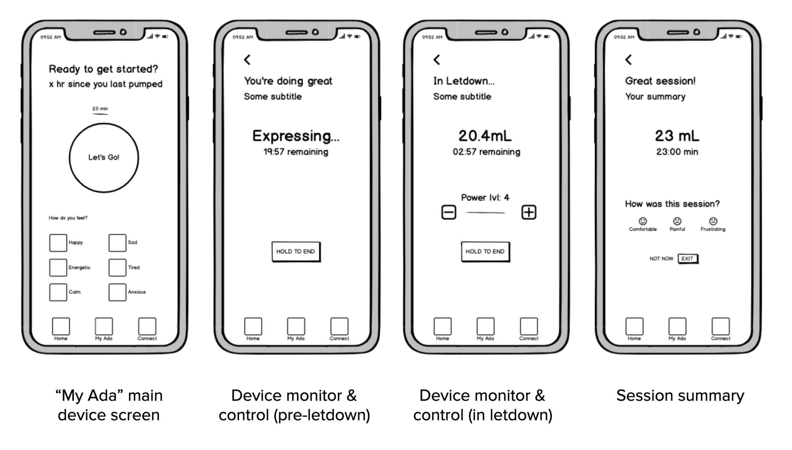
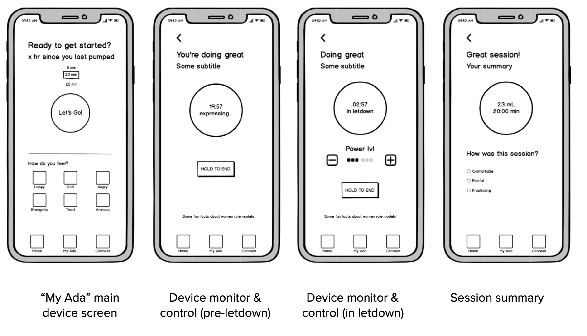
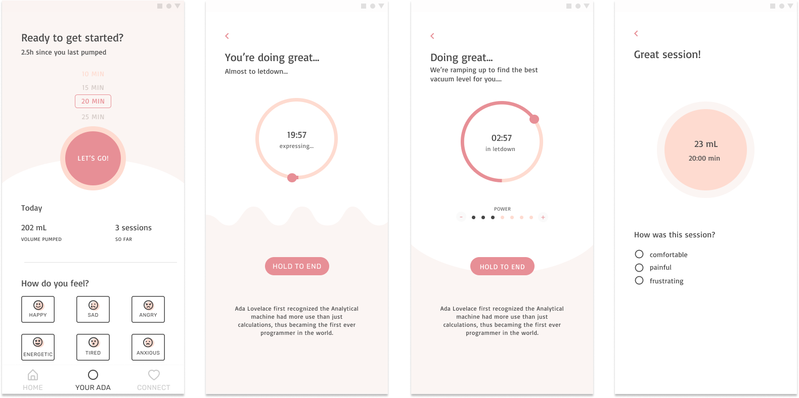
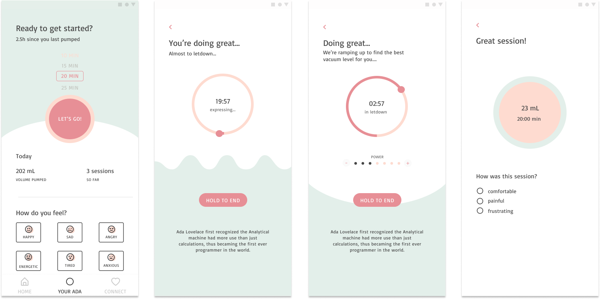

team
1 Product Manager, 1 Product Designer, 3 Engineers
Tools
Miro, Figma, Mixpanel
The design of this mobile application was done as part of my final year design project, done in collaboration with three other graduating mechatronics engineering students. Our goal was to improve the breast pumping experience for working mothers.
Role
I was sole product designer responsible for the app's UX/UI, branding, and prototyping. Over the course of 4 months, I worked closely with the other group members to develop a deep understanding of our core users. I also worked alongside the engineering leads throughout to identify constraints and data limitations of the final user experience.
For 6M working breastfeeding mothers, the breast pumping experience is "difficult, stressful, and isolating"
Through personal user interviews, and literature review of research done by the MIT media lab, we found that the current breast-pumping experience is immensely stressful, uncomfortable, and isolating for busy working mothers.
Mothers who choose to work and breastfeed are relying on archaic breast pumps that have barely been innovated in the last 50 years. They are forced to make a sacrifice between putting their baby’s developmental health or their career first. We wanted to challenges this notion and empower mothers to be able to prioritize both their maternal and career choices.
Primary user research was done through user interviews, in order to establish an emotional and personal relationship with the target user group. It was important to us to gain an understanding of how the potential pain points of breast pumping affects other factors of the mother's life. 5 personal interviews and 50 interviews conducted by the MIT Media Lab were analyzed to identify the target user group: career-focused mothers aged 25-40.

Main pain points
- Mothers are anxious about and lack insight on lactation data: how much milk should be produced, how often they should pump, when milk should be consumed
- Discouraging pumping results lead to frustration and self-insecurity
- Most mothers lack easy access to lactation consultants and peers
Secondary research was also done through competitive analysis. The main breast pumping app competitors include the MyMedela app for Medela pumps, iFeed, and Pumplog. Some offer features such as manual logging, and some offer on-demand access to lactation consultants, but none offer a holistic complete experience. None of the competitors offer data insights or similar data-driven features, despite a user survey we conducted with 50 new mothers, which shows an overwhelming user demand (94.4% of 119 responses) for smart recommendations.
Goals
Improve the breast pumping experience for working mothers with a mobile app that accompanies a better breast pump. The mobile app experience should:
- Provide the mother easy-to-use controls to their breast pump, with a calming overall experience
- Help mothers maintain a realistic pumping routine and preventatively monitor health with smart recommendations
- Reduce feelings of isolation, providing mothers access to professional support and helpful content
The rest of this case study will focus on the mother's flow to start and complete a single pumping session through the app, from the "My Ada" tab.
User stories
As a new working mother, I’d like to see know
The user flow is a basic sequential structure, and mostly linear. Possible user actions were optimized to minimize cognitive load and stress. This allows the mother to better focus on the stressful and physical task of pumping.

Early design iterations were done using the card sorting method. They were then moved to wireframes built using Balsamiq.

Medium fidelity mockups were developed in Figma, first in grayscale to focus on composition and developing end-to-end user flow

Final prototype
.png)